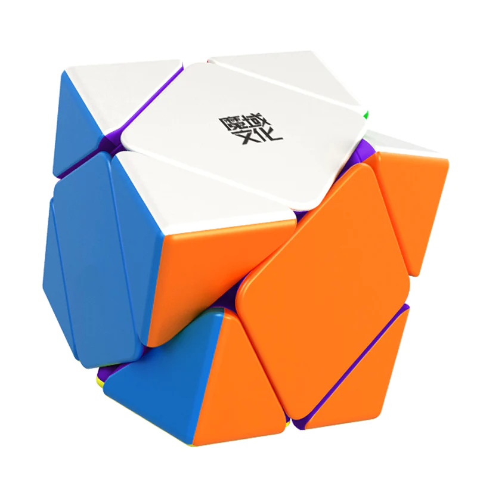
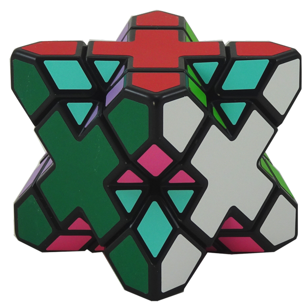

Skewb
El Skewb es un rompecabezas mecánico en forma de cubo con una estructura interna compleja, que fue inventado en la década de 1980 por el arquitecto húngaro Péter Sebestény. Aunque se parece a un cubo de Rubik, el Skewb tiene una mecánica de giro única que lo hace más desafiante que el cubo de Rubik.
El Skewb consta de 21 piezas móviles, que pueden ser rotadas en cualquier dirección para cambiar la orientación de las caras del cubo. A diferencia del cubo de Rubik, el Skewb no tiene un eje de rotación central, lo que lo hace más difícil de resolver. El objetivo del juego es girar y mezclar las piezas y luego tratar de volver a armar el cubo de tal manera que cada cara tenga un solo color.
El Skewb se ha convertido en un popular rompecabezas de velocidad y destreza, con competencias y eventos en todo el mundo. Es un desafío interesante y emocionante para aquellos que disfrutan de resolver rompecabezas mecánicos y de desarrollar habilidades cognitivas, como la lógica, la planificación y la percepción espacial.
